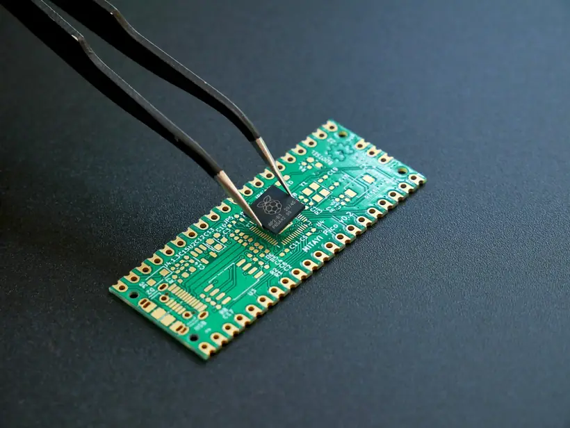

Product Certification
Whether you manufacture in India or import into it, most regulated products need a mark before they reach a shelf. We identify the right standard, manage lab testing, prepare the technical file and deal with the regulator until the licence is in your hands.
- Services
- 63
- Response
- Within one business day
- Pricing
- Fixed, itemised quote
- Support
- One named specialist
Services in this practice
Choose a service to see requirements, documents, process and timelines.
BIS Certification
India's national standards body runs several certification schemes. Many electronics, appliances and industrial goods cannot be made, imported or sold without a BIS licence.
Learn moreISI Mark
The familiar ISI mark is granted under BIS Scheme-I after factory inspection and testing. It is compulsory for products covered by Quality Control Orders.
Learn moreBIS CRS Registration
A test-and-register scheme for electronics and IT products. Samples are tested at a BIS-recognised lab and the product is registered online — no factory inspection.
Learn moreBIS FMCS
The route for overseas factories to obtain the ISI mark. It involves an Indian representative, factory audit abroad and sample testing in India.
Learn moreBIS Scheme-X
A conformity scheme introduced for machinery and electrical equipment safety. It relies on a declaration of conformity backed by testing and audit.
Learn moreECO Mark
A voluntary label for products that meet both ISI quality requirements and additional environmental criteria.
Learn moreTEC Certification
Mandatory testing and certification of telecom equipment before it can be sold or connected to networks in India.
Learn moreWPC ETA Approval
Required for any product using Wi-Fi, Bluetooth or other radio frequencies before import or sale in India.
Learn moreAIS Certification
Type approval and conformity of production for vehicles and automotive components under Indian motor vehicle rules.
Learn moreAYUSH Premium Mark
A higher-tier voluntary mark for AYUSH products that meet enhanced quality and safety requirements, useful for export credibility.
Learn moreAYUSH Standard Mark
A voluntary mark confirming AYUSH products meet domestic regulatory quality requirements.
Learn moreICMED 13485
A national certification scheme for medical device quality, combining ISO 13485 with product-specific requirements.
Learn moreEat Right Campus
An FSSAI initiative that recognises campuses — offices, colleges, hospitals — that serve safe, healthy food.
Learn moreEPR Registration
Producers, importers and brand owners of plastic packaging, electronics, batteries and tyres must register for EPR and meet recycling targets.
Learn moreCDSCO Registration
Licences for manufacturing and importing medical devices, drugs and cosmetics in India, handled through the SUGAM portal.
Learn moreCE Marking
The passport for selling in the European Economic Area. It declares that a product meets every applicable EU directive and regulation.
Learn moreUKCA Marking
Britain's post-Brexit conformity mark for goods placed on the market in England, Scotland and Wales.
Learn moreRoHS
Limits lead, mercury, cadmium and other hazardous substances in electrical and electronic equipment.
Learn moreREACH
The EU chemicals regulation. Substances above one tonne per year must be registered, and articles must disclose substances of very high concern.
Learn morePED
CE conformity for boilers, vessels, piping and valves that operate above 0.5 bar.
Learn moreATEX
Required for equipment and protective systems used in potentially explosive environments such as refineries and mines.
Learn moreKitemark
One of the UK's most trusted quality marks, showing a product is independently tested and continually monitored.
Learn moreWRAS
Confirms that plumbing products and materials in contact with drinking water meet UK water regulations.
Learn moreBASEC
A specialist cable certification recognised across the UK, Middle East and Africa.
Learn moreVDE
A respected German mark for electrical safety, often requested by European distributors.
Learn moreDINplus
A quality mark that goes beyond basic standards, common for wood pellets, pipes and construction products.
Learn moreENplus
The leading quality scheme for wood pellets, covering production, storage and delivery.
Learn moreEPAL
Licensing for manufacturing and repairing EPAL Euro pallets to an exact specification.
Learn moreVdS Approval
A German approval for fire protection and security products, widely accepted by insurers.
Learn moreE-Mark
Type approval for vehicles and components under UNECE regulations, accepted across Europe and many other countries.
Learn moreBRE Global
Third-party approval for fire, security and construction products, listed in the UK's Red Book.
Learn moreCARES
Product conformity certification for reinforcing steel and related products used in construction.
Learn moreLeather Working Group
An environmental audit and rating for leather tanneries, requested by most global footwear and fashion brands.
Learn moreUL Certification
The best-known safety mark in North America. Retailers, insurers and inspectors frequently insist on it.
Learn moreETL Listing
An alternative to UL that proves compliance with North American safety standards, issued by a recognised testing lab.
Learn moreCSA Certification
The main safety mark for electrical and gas products sold in Canada, also accepted in the US.
Learn moreCSA W47.1
Canadian certification for companies that perform fusion welding of steel structures.
Learn moreFCC Certification
Required for electronic devices sold in the US to ensure they don't cause harmful radio interference.
Learn moreUS FDA Food Facility Registration
Every facility that makes, packs or stores food for US consumption must register with the FDA and appoint a US agent.
Learn moreUS FDA Device Registration
Medical device establishments must register and list their devices with the FDA before export to the US.
Learn moreUS FDA Drug Registration
Drug establishments must register, list products and obtain National Drug Codes before shipping to the US.
Learn moreUS FDA Cosmetic Registration
Under MoCRA, cosmetic facilities and products marketed in the US must be registered and listed with the FDA.
Learn moreUS FDA 510(k)
Demonstrates that a new medical device is substantially equivalent to a device already legally marketed in the US.
Learn moreHealth Canada MDL
Class II–IV devices need a Medical Device Licence, supported by MDSAP certification, before sale in Canada.
Learn moreNOM Certification
Mexico's mandatory technical standards for electrical, electronic, textile and consumer products.
Learn moreNEMA
NEMA ratings define enclosure protection and electrical product performance expected by North American buyers.
Learn moreCertiPUR-US
Certifies that flexible polyurethane foam is made without certain harmful chemicals and meets emission limits.
Learn moreFM Approvals
Testing and certification for fire protection, electrical and building products, valued by insurers worldwide.
Learn moreSEFA
Performance standards for laboratory furniture, fume hoods and casework.
Learn moreANSI/ESD S20.20
Certifies a facility's programme for protecting sensitive electronics from electrostatic damage.
Learn moreCCC Mark
China's mandatory safety mark for listed products, from electronics to auto parts, before import or sale.
Learn moreKC Mark
South Korea's integrated certification mark for electrical safety and electromagnetic compatibility.
Learn moreG-Mark
Required for low-voltage electrical products and toys sold across the GCC states.
Learn moreSASO / SABER
Saudi Arabia's online conformity system. Products need a Product Certificate and a Shipment Certificate before customs clearance.
Learn moreSFDA Approval
Registration and listing of food, drugs, medical devices and cosmetics for the Saudi market.
Learn moreEmirates Quality Mark
The UAE's conformity scheme for regulated products, with a voluntary quality mark for higher assurance.
Learn moreKUCAS
Kuwait's certificate of conformity programme for imported regulated products.
Learn moreSONCAP
Nigeria's pre-export conformity programme. Regulated goods need a product certificate and a SONCAP certificate per shipment.
Learn moreEAC Certification
The single conformity mark for the Eurasian Economic Union — Russia, Kazakhstan, Belarus, Armenia and Kyrgyzstan.
Learn moreKKDIK
Turkey's REACH-like chemicals regulation requiring registration of substances imported or produced above one tonne per year.
Learn moreWHO PQS
Prequalification of immunisation equipment — cold-chain fridges, cool boxes, syringes — for UN procurement.
Learn moreFairtrade
Assures buyers that producers received fair prices and work under decent conditions.
Learn moreProTerra
Certifies non-GMO and sustainably produced feed and food ingredients across the supply chain.
Learn moreHow we work.
Clear stages, clear owners, no surprises.
Tell us what you make
Share your product, site or service and the markets you want to reach.
Get a clear plan
A written roadmap with every approval, the timeline and a fixed quote — within one business day.
We do the heavy lifting
Documents, testing, applications, audits and regulator queries — managed by one dedicated specialist.
Certified, and kept that way
We track renewals, surveillance audits and rule changes so your certificates never lapse.
Ready when you are.
Tell us what you make and where you want to sell it. You'll have a clear plan, timeline and fixed quote within one business day.